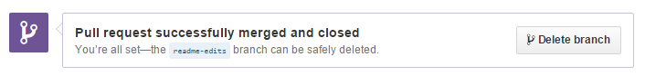

Проект Hello World это дань традиции в компьютерном программировании. Это простое упражнение которое поможет начать вам при изучении чего-то нового. Давайте начнем с GitHub!
GitHub это проект для хостинга и совместной работе над проектом. Вам не нужно волноватся про потерую данных на вашем жестком диске или управлением проектом на множестве компьютеров — синхронизируйтесь откуда угодно. Что важнее всего, GitHub это совместный и асинхронный рабочий процесс для создания программного обеспечения лучше, вместе.
Это руководство проведет вас по основам GitHub: Репозитории, Ветки, Коммиты, Вопросы и Pull запросы.
С этими навыками, вы далеко пойдете. И с этим hello-world репозиторием у вас будет место для хранения идей (известных как будущие репозитории, например jlord/hello-world), ресурсы или другие общие замечания, даже обсуждения вещей с другими (например holman/feedback).
Установка и Code Free Zone
Мы собираемся завершить задачи в этом руководстве используя GitHub.com, значит вы не должны знать командную строку или даже устанавливать Git(програмное обеспечение слежения за изменениями, на котором построен GitHub). Вам даже не нужно знать как писать код. Вам, однако, понадобиться аккаунт GitHub, поэтому регистрируйтесь если у вас еще нет ни одного!
Совет: Открыть руководство в отдельном окне браузера (или вкладке), так что бы вы могли видеть его, когда вы будете выполнять действия из него.
Создание репозитория
Репозиторий это основная единица GitHub, в большинстве случаев это один проект. Репозитории могут содержать каталоги и файлы, включая изображения – все что необходимо вашему проекту. Потому что мы рекомендуем подключать README, или файл описывающий проект, в каждый репозиторий, GitHub делает легким добавление его сразу при создании вашего репозитория. Также предлагает и другие возможности, такие как файл лицензии, но мы можем это пока пропустить.
Чтобы создать новой репозиторий
- Нажмите иконку идущую перед вашим пользователем, справа в верху.
- Назовите репозиторий
hello-world. - Напишите короткое описание.
- Выберите "Initialize this repository with a README".
Нажмите "Create repository". Бум, репозиторий! 
Открыть запрос
Запрос это примечание в репозитории о чем-то что требует внимания. Это может быть ошибка, запрос функционала, вопрос или много других вещей. На GitHub Вы можете пометить, искать и назначать запросы, что делает проще управление активным проектом.
У вас теперь есть репозиторий, но он довольно голый. Его README мог бы быть наполнен большим количество информации, так что люди знали бы что тут происходит. Откройте запрос!
Откройте запрос для изменения README
- Нажмите "Issues" таб на боковой панели.
- Нажмите "New Issue".
- Заполните заголовок и описание вашего запроса.
Нажмите "Submit new Issue" когда закончите. Теперь этот запрос имеет постоянное место жительства (URL), на которое вы можете ссылатся даже после его закрытия.
Далее, поработайте над изменением вашего README и закройте запрос.
Создание ветки
Ветвление это способ работы над разными частями рапозитория одновременно.
Когда вы создаете репозиторий, по умолчанию он имеет одну ветку с именем master. Вы можете продолжать работать с этой веткой и иметь только одну, и отлично. Но если у вас есть еще один функционал или идея над которыми вы хотите работать - вы можете создать другую, начинающуюся из master, так что вы можете оставить master в его рабочем состоянии.
Когда вы создаете ветку, вы делаете копию оригинальной ветки, какой она была на тот момент (как фото снимок). Если оригинальная ветка изменилась в процессе плка вы работали над вашей новой веткой, не переживайте, вы можете всегда подтянуть те обновления.

Возмодно у вас были, в какой-то момент вашей жизни, сохраненные разные версии файлов например, “story.txt”, “story-joe-edit.txt”, “story-sue-edit.txt”. Ветки достигают таких же цели, но ими легче управлять в GitHub репозиториях.
На GitHub, наши разработчики, писатели, и дизайнеры используют ветки, что бы держать исправления ошибок и нового функционала отдельно от нашего master (production) ветки. Когда функционал или исправление готово, ветки объекдиняются в master.
Чтобы создать новую ветку
- Перейдите на наш новый репозиторий
hello-world. - Нажмите выпадающее список в верхней части списка файлов, там где написаноbranch: master.
- Введите имя ветви,
readme-edits, в тексовое поле новой ветки - Выберите синий Create branch, появивщийся блок, или нажмите “Enter” на вашей клавиатуре.
Теперь у вас есть две ветки, master and readme-edits. Они выглядят одинаково, но не надолго! Далее мы добавим наши изменения в новую ветку.
Сделать коммит
На GitHub, сохранненные изменения называются commits(коммиты). Коммиты довольно великолепно, потому что несколько их вместе читаются как история вашего проекта.
Каждый коммит ассоциируется с коммит сообщением, которые объясняюще описывают, почему было принято конкретное изменение. Благодаря этим сообщениям, вы и другие могут прочиать коммиты и понять что вы сделали и почему.
Вы все еще должны быть на представлении кода для вашей readme-edits ветки, теперь сделайте несколько изменений!
Чтобы сделать коммит
- Нажмите на README файл.
- Нажмите на иконку карандаша в вашем верхнем правом углу открытого файла чтобы редактировать.
- В редакторе, напишите како-то текст, расскажите немного о себе.
- Напишите название коммита, которое говорит о том что вы сделали.
Нажмите Commit changes. Теперь эти изменения были сделаны в файле README на вашей readme-edits ветке и теперь эта ветка содержит отличающийся контент и коммиты от ветки master (как и нужно!).
Открыть Pull Request
Pull запросы это сердце сотрудничества на GitHub. Когда вы делаете pull request, вы предлагаете ваши изменения и запрашиваете чтобы кто-то подтянул ваш вклад - то есть объединил в их ветку. GitHub’s Pull Request функционал позволяет сравнивать содержимое в двух ветках. Изменения, добавления и удаления, показаны в зеленом и красном, и названы diffs (различия).
Как только вы сделаете изменения, вы можете открыть Pull Request. Люди используют Pull Requests чтобы начать обсуждение коммитов (code review) даже до того как код будет завершен. Таким образом, вы можете получить обратную связь в процессе или помощь когда вы застряли.
Используя GitHub’s @mention system в ваших Pull Request сообщениях, вы можете попросить об отзыве от отдельных людей или команды, являются ли они с вами или в далеке на 10 временных зон.
Вы даже можете открыть, как мы сейчас и сделаем, "Pull Request" в вашем репозитории и склеить его самостоятельно. Это отличный путь к изучению процесса до работы над большими проектами.
Создайте "Pull Request" для измнений в README
Нажмите на изображение для увеличения
{kind=link}
{kind=link}
{kind=link}
Когда вы закончите с сообщением, нажмите "Create pull request"!
Совет: Вы можете использовать смайлы emoji и перетаскивать изображения и гифки в "commits" and "Pull Requests".
Объедините ваш "Pull Request"
Пришло время объединить ваши изменения вместе – "merge" вашу веткуreadme-edits в ветку master.
- Нажмите на зеленую кнопку для слияния изменений в
master. - Нажмите "Confirm merge".
- Идите дальше и удалите ветку, так как ее изменения были добавлены. Удаление происходит с помощью фиолетовой кнопкой "Delete branch".

Если вы вернетесь к запросу, который вы открыли, то теперь он закрыт! Потому что ваш заголовок вашего "Pull Request" содержал “fixes #1”, GitHub заботится о закрытии запросов когда "Pull Request" был объединен!
Празднуйте!
Вы изучили как создавать "pull request" на GitHub! 


Для того что бы похвастаться, вот спискок вещей которые вы осуществили в этому обучаещем материале: создание рпеозитория, ветки, запроса, и "pull request", потом объединили "pull request"! Покажите ваш новый вклад в квадратах!
Если вы хотите узнать о сиде "pull requests", мы рекомендуем прочитать GitHub Flow Guide. Вы также можете посетить GitHub Explore и принять участие в Opes Source проекте 
Совет: Проверьте наши другие Руководства и YouTube канал для большего "GitHub how-tos".
Последнее обновление Май, 2014(Переведено в Августе, 2015)